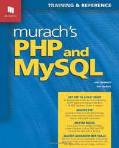
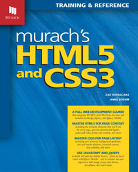
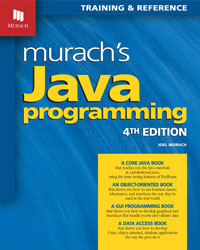

Current Book List
Click on a book for more information
-

When it comes to querying and working with SQL Server databases, most .NET developers squeak by with minimal knowledge, never realizing all the power they're missing out on. But this 2012 edition of our popular SQL Server book boosts your SQL skills in a way that makes you a more effective, efficient, and confident developer...whether you're issuing queries, using powerful database features like stored procedures, triggers, or functions, or designing and creating database tables. A valuable guide for any .NET developer.
-

PHP and MySQL are two of today's most popular,open-source tools for server-side web programming. And with this book, you'll learn right from the start how to use them together, the way the pros do. In fact, you'll create a database-driven web site that implements the MVC pattern in the first 6 chapters! Then, you'll be able to build out your PHP and MySQL skills to the professional level as quickly as you want.
-

HTML5 and CSS3 are changing how web pages are developed in some exciting new ways! The trick is learning how to use this new functionality as quickly, as easily, and as sensibly as possible. That's where this latest edition of our HTML and CSS book comes in. It integrates the HTML5/CSS3 features that are widely implemented today with the classic features you still need. Whether you're new to web development...or whether you're an experienced web developer who's been frustrated by the slow pace and gaping holes in the other training you've tried...this book is for YOU.
-

Today, you can provide a great user experience by designing your web pages the right way (see our HTML5 book) and by using JavaScript on the client side to deliver fast, customized content...regardless of what programming's done on the server side. So our JavaScript book shows you how to add some pizzazz to your web pages. Fast-paced, professional, and packed with expert practices, it guides you through each step as you learn how to script sites that enhance the user experience and ensure browser compatibility.
-

Since 2001, programmers have been using our core Java book to master the skills they use every day in developing desktop and web applications. Now, you can train yourself in Java by using the current edition of that book, Murach's Java Programming. It’s the one core Java book we’ve seen that presents object-oriented features in a way that's both understandable and useful in the real world. And because no professional Java developer should miss out on the productivity features that are built into today's free IDEs, this edition shows you how to use NetBeans to create, compile, test, and run Java applications, right from chapter 1.
When it comes to querying and working with SQL Server databases, most .NET developers squeak by with minimal knowledge, never realizing all the power they're missing out on. But this 2012 edition of our popular SQL Server book boosts your SQL skills in a way that makes you a more effective, efficient, and confident developer...whether you're issuing queries, using powerful database features like stored procedures, triggers, or functions, or designing and creating database tables. A valuable guide for any .NET developer.